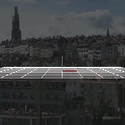
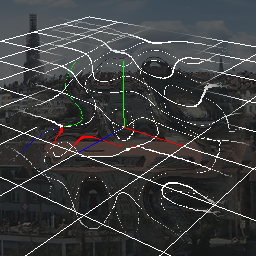
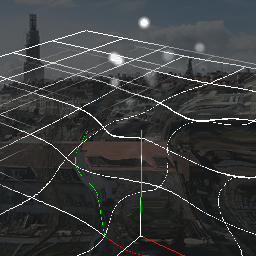
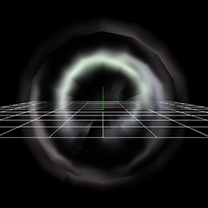

13. Let's distort a background!¶
Overview¶
This chapter explains how to distort the background with Effekseer. In recent games, there are effects that can distort the background. By setting parameters in Effekseer, you can distort the background with effects.

Effect No.1 created in this chapter |

Effect No.2 created in this chapter |
We made it possible to download the effect created in advance from the link below.
How to use¶
To distort a background, you need to specify an image which contains an information about distortion. An image isn't drawn about color, but the image is drawn about distortion.
An image for distortion is almost same to an image for normal.
Red color expresses an intensity of distortion horizontally. 127 is center, 0 is left direction, 255 is right direction. Green color expresses an intensity of distortion vercially. 127 is center, 0 is upeer direction, 255 is lower direction. Blue color is ignored.
Distorting image
Please open effect1.efkproj.
In Basic render settings panel, Texture/Distortion1.png is specified as color image of Distortion node.
In Basic render settings panel, make distortion checked and make distortion enabled.
I recommend that you change a background image in Environment panel to see easily.
Distorted background
Distortion intensity¶
Specify distortion intensity in Basic render settings panel.
If you modify distortion intensity in Basic render settings panel, the distortion changes.
The greater distortion intensity, the stronger the distortion.
The closer distortion intensity is to 0, the less distorted.
|
Distortion intensity : 1 |

Distortion intensity : 3 |
Drawing priority¶
Basically, distortion only distorts a background, you can not distort your own effect.
However, you may want to distort your own effects.
In such a case, change the drawing priority in Depth panel.
Drawing priority determines the order of rendering between nodes. Normally, the node placed at the bottom of the node tree is drawn later. If the drawing priority is different, the node with the higher drawing priority is drawn at a later time.
Nodes with this drawing priority less than -1 are distorted with the node whose drawing priority is 0 or more.
Let's change the drawing priority of the Particle node. If you change the drawing priority, you can see that the particles of the Particle node are distorted to the Distortion node.
|

Drawing priority : 0 |
Drawing priority : -1 |
Use case¶
Distortion can also be used with ring and UV scroll. Radial distortion can be easily created by combining ring and UV scroll.
This effect is an example combining ring and UV scroll. The image on the left was applied to the ring with adjusted parameters. the center image is the result of applying left image without distortion. The image on the right uses distortion with UV scroll. White particles were scattered in all directions.

Distorting image |

Effect without distortion |
Effect |
Caution¶
If you play effects with other game engines, appearance may change.
Finally, I made it possible to download the effect created in this chapter.
Summery¶
In this chapter, I explained about distortion. If you specify distortion well, it will look better. Let's use it.